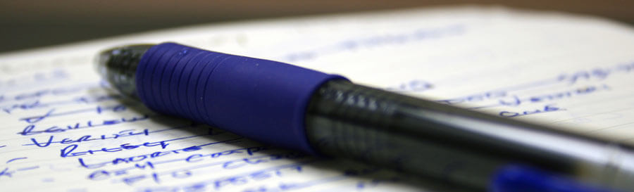

6 Spend half an hour at the beginning of the day planning activities
We can use a diary or a planner to schedule when to do things. It is worth setting time aside each morning to do this, so that activities are focused and clear. We need to, for example:
- go through everything very quickly
- make a list of what needs doing and when
- avoid handling the piece of paper more than once – eg avoid picking up a job, doing a bit, and then putting it back on the pile
- avoid starting lots of jobs at the same time – multitasking is not efficient
- plan and schedule planning, preparation and creative time for long-term projects – otherwise short-term urgent tasks will always use up all of our time.
Batching similar tasks together can also save time – eg setting aside half an hour to make all telephone calls, regardless of their subject.